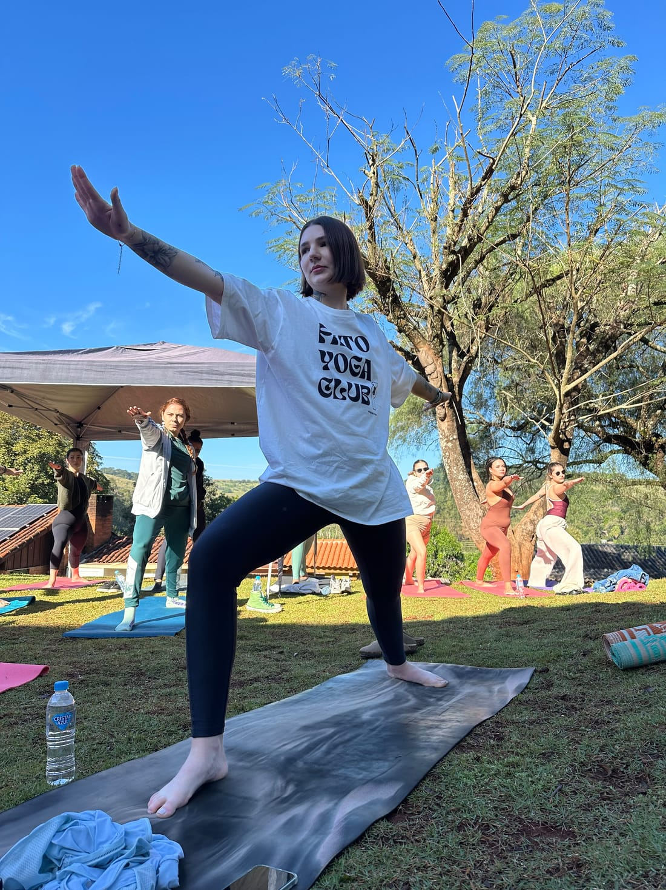
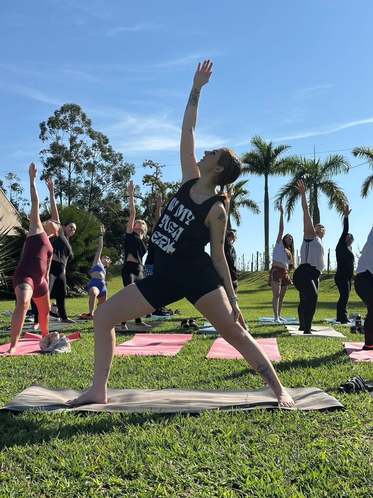
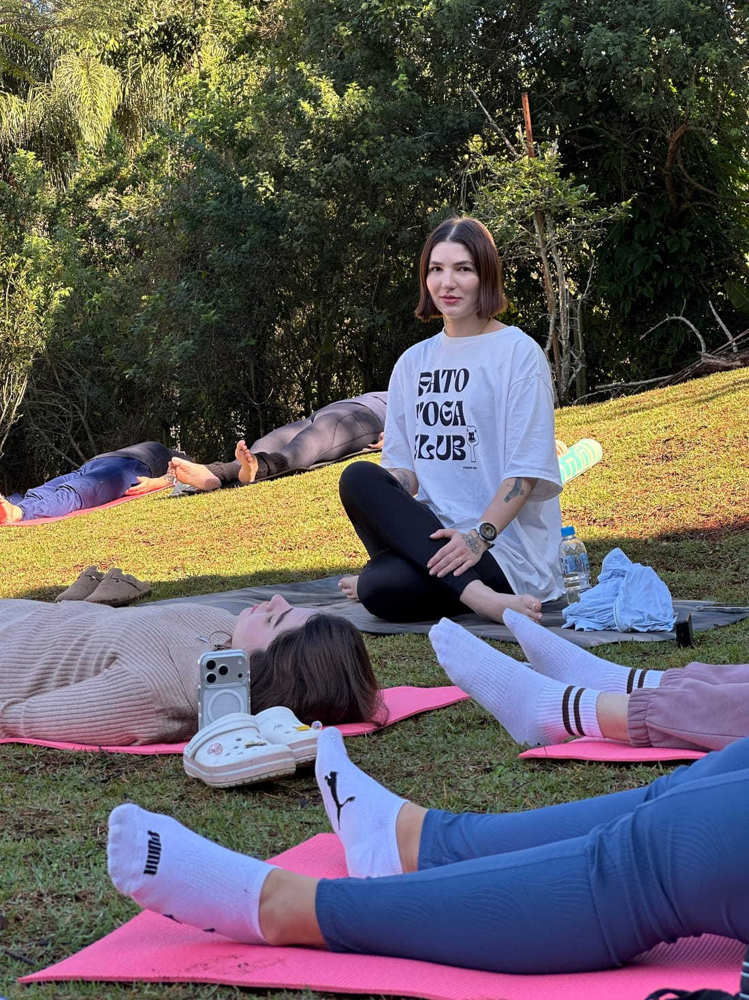
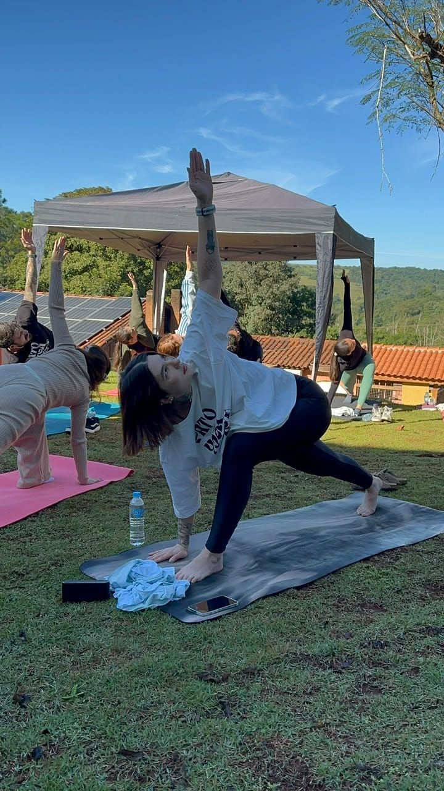
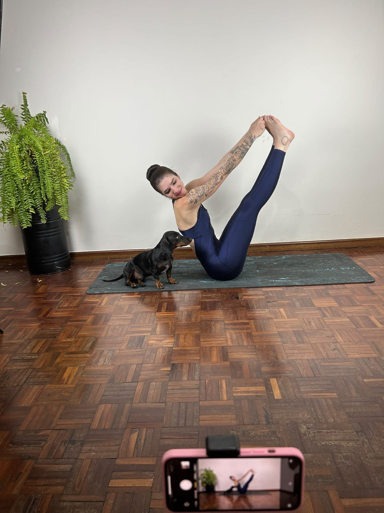
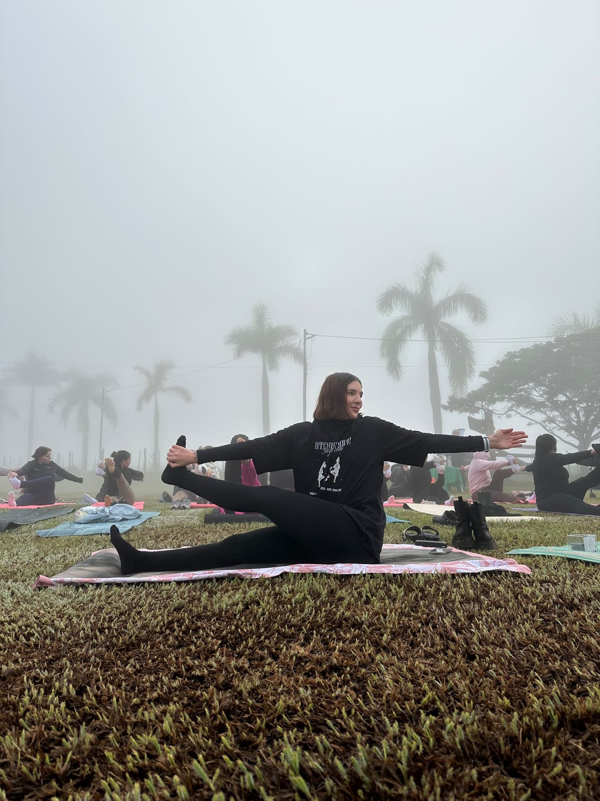

15 de outubro · Dia do Professor
A Professora

Uma carta pra quem me ensina, todo dia, a respirar melhor.
Ler a cartaCarta aberta
Você ensina que yoga não é sobre tocar os pés no chão — é sobre o que a gente aprende no caminho até lá.
Eu te vejo começar o dia antes do sol, estender o tapete na grama, esperar a turma chegar. Vejo a paciência quando alguém trava numa postura, o cuidado quando alguém chega cansado, a alegria quando alguém finalmente respira. Você não ensina pose: ensina presença.
Tem dias de névoa, em que você conduz sem enxergar longe. Tem dias de sol, em que sua aula parece festa. Em todos, você repete a mesma lição — firme na superfície, trabalhando com força e constância por baixo d'água. Como o pato do seu studio. Como você.
Obrigado por ensinar tanto, pra tanta gente — e por continuar me ensinando todos os dias, do jeito mais bonito, sem nem perceber.
Feliz Dia do Professor —
com amor, Leo
Ela em movimento
No tapete, na grama,
na névoa e no sol.





Firme na superfície,
força por baixo d'água.

A marca dela
O pato que ela escolheu
Quando criou a Yogue-se, ela escolheu como símbolo um pato sentado em lótus — e não é à toa. O pato desliza calmo na superfície enquanto rema com força por baixo.
É a definição de quem ensina: leveza por fora, trabalho firme por dentro. No studio, no tapete e na vida, ela traduz esse equilíbrio todos os dias.
respirar, sorrir e não se levar tão a sério também é uma prática.
Do tapete pro guarda-roupa
As camisetas dela
Ela também desenha e vende camisetas — cada estampa criada pra lembrar que a vida não precisa ser tão séria.